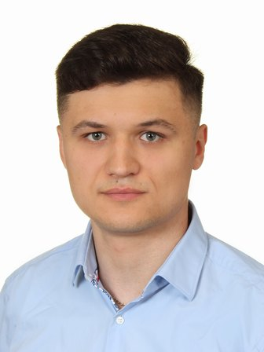

Koordynator ds. zaopatrzenia i sprzedaży
FISHKA — Market Zoologiczno-Wędkarski
- Obsługa platform zakupowych B2B
- Zarządzanie procesami logistycznymi i towarem
- Budowanie i utrzymywanie relacji z dostawcami
- Profesjonalna obsługa klienta
Idę w stronę sztucznej inteligencji i uczenia maszynowego — a praktykę IT znam od podszewki: helpdesk, sieci i systemy ERP.
Studiuję informatykę na II stopniu, specjalność sztuczna inteligencja i uczenie maszynowe.
Doświadczenie IT zbierałem w dziale IT zakładu produkcyjnego: helpdesk, infrastruktura, sieci i systemy ERP. Równolegle do studiów pracuję przy zaopatrzeniu i sprzedaży, gdzie platformy B2B i dane od dostawców to codzienność.
W AI interesuje mnie strona wdrożeniowa — to, co dzieje się po treningu. W zespołowym projekcie na studiach odpowiadałem za uruchomienie detektora YOLOv8 na Raspberry Pi i za pipeline rozpoznawania. Po godzinach lutuję i buduję sprzęt — ostatnią rzeczą, którą złożyłem od zera, była łódź zanętowa.

 obejrzyj demo
obejrzyj demo
Rozpoznawanie 52 kart w czasie rzeczywistym na Raspberry Pi 4. Dostrojony model YOLOv8n, kamera w trybie mono i polski asystent głosowy, który odczytuje każdą kartę — cała inferencja lokalnie, bez chmury.
Python do skryptów i uczenia maszynowego, SQL do odpytywania danych relacyjnych, Power BI do zamiany ich w raport, który da się przeczytać.
Budowanie interfejsów w HTML, CSS i JavaScript; wersjonowanie w Git, projektowanie w Figmie zanim powstanie kod.
Utrzymanie infrastruktury, wirtualizacja i zarządzanie sprzętem w środowisku produkcyjnym.
Administracja i diagnostyka sieci lokalnych i rozległych.
Specjalizacja moich studiów II stopnia — obszar, w którym się rozwijam i którego wciąż się uczę. Uczę się go w praktyce: najbardziej interesuje mnie moment, w którym model przestaje być kodem w notatniku i zaczyna działać na realnym sprzęcie.
Biegła obsługa środowisk biurowych i chmurowych.
Analityczne podejście i nastawienie na rozwiązywanie problemów w zespole.
Godziny analizy i przygotowania — łowisko, sprzęt, warunki — i jeszcze więcej godzin czekania. Wygrywa plan i konsekwencja w dążeniu do celu, nie szczęście.
Lutowanie, układy, okablowanie. Ostatni projekt: własna łódź zanętowa — od schematu, przez elektronikę i napęd, po pierwsze wodowanie. Ten sam rodzaj pracy, co przy Raspberry Pi, tylko bez oceny na koniec.
HTML, CSS i czysty JavaScript. Sieci uczę się tak samo jak sprzętu — budując rzecz, a nie czytając o niej.
Śledzę, co dzieje się w AI, embedded i sprzęcie — głównie po to, żeby sprawdzić, co da się z tego naprawdę zbudować.